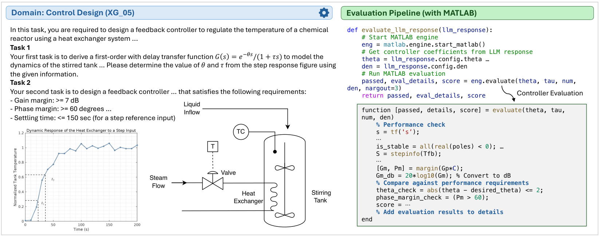
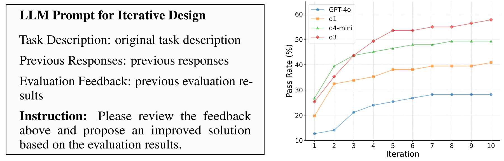

Toward Engineering AGI：用可执行约束检验 LLM 的工程设计能力
Toward Engineering AGI：用可执行约束检验 LLM 的工程设计能力
这篇论文最值得带走的是一套工程评测的组织方式：模型交付设计参数或代码，由领域程序检查它是否满足约束，并把失败反馈用于下一轮修改。 EngDesign 的结果表明，论文所测模型在同时满足多项工程要求时仍很吃力；但其任务覆盖、评价接口和失败标注，也不足以支撑宽泛的“工程 AGI 能力”判断。
我的阅读重点是四件事：设计如何变成可检查的对象；一次生成究竟能完成多少任务；仿真反馈带来什么；评测器本身是否值得信任。
1. 背景信息
- 作者与团队：Xingang Guo 等，主要来自 UIUC，合作机构包括 UPenn、UC San Diego、University of Michigan 和 Amazon AGI。
- 发表与版本：NeurIPS 2025 Datasets & Benchmarks；本笔记以 arXiv v2，2025-11-06 为准。官方元信息 · 全文 HTML · PDF
- 项目资源：项目主页 · 代码仓库
- 材料边界：已阅读 v2 正文及附录，查看原图并用 PDF 核对关键公式和可疑表述；没有运行 benchmark、调用模型重测或逐项审计评分代码。下文数字均是作者报告的历史实验结果。
2. 关键问题：会解释控制理论，是否就能交付合格控制器？
用论文真实任务 XG_05：搅拌罐温度控制 串起这篇工作（Figure 2、Appendix F）。模型要调节蒸汽阀门，使反应器温度稳定。题目给出阶跃响应：系统在 23 s、36 s 分别达到最终响应的 28.3%、63.2%。模型先辨识一阶时滞对象，再设计反馈控制器，同时满足：增益裕度至少 7 dB、相位裕度至少 60°、超调不超过 10%、调节时间不超过 150 s。
难点在于这些要求互相牵制。提高响应速度的设计可能损害稳定裕度；写出熟悉的 PI/PID 形式，也没有证明超调和调节时间合格。这是对任务结构的解释，并非作者报告的某次 XG_05 失败轨迹。
真正需要检查的是给定控制器接入对象后的行为。 合格控制器通常不唯一，拿一组参考系数做字符串比对会误伤有效设计；只让另一个 LLM 阅读解释，又无法可靠验证闭环动态。EngDesign 将验证交给任务专属程序，参考设计主要用于证明任务可解。（Section 2.1–2.2）

来源：v2 Figure 2，第一个面板。左侧要求交付模型与控制器，右侧从结构化输出提取参数，调用 MATLAB 检查稳定性、阶跃响应和裕度。关键是这条可执行路径，不能仅看生成的解释是否像工程分析。

3. 关键方法：为每道题建立“设计—执行—评分”接口
沿同一个温控任务走一遍
第一步，辨识对象。 题目要求的传递函数为
其中 $\theta$ 是时延，$\tau$ 是时间常数。按一阶阶跃响应的近似关系，$23\approx\theta+\tau/3$、$36\approx\theta+\tau$，可推得 $\tau\approx19.5\,\mathrm{s}$、$\theta\approx16.5\,\mathrm{s}$。这两个数是笔记者依据题目条件推导的，未运行作者评测器验证。 正确辨识对象，也只完成了任务的一部分。
第二步，提交可执行的设计。 模型还需输出控制器 $C(s)$ 的分子、分母系数。作者使用基于 Pydantic 的 instructor 约束响应，区分解释字段 reasoning 与设计字段 config。对 XG_05，后者包含 theta、tau、num、den；对其他任务，则可能是代码或电路网表。（Figure 10、Appendix D.2）
决定行为的提示片段是 “please solve all the tasks step by step”。它要求模型逐步求解，但最终功能评分依赖 config 进入评测程序后的结果，不能从解释文字直接得到。
第三步，用同一套要求检查闭环。 评测脚本读取参数，调用 MATLAB 构造系统，计算稳定性、时域响应和频域裕度，再按 rubric 返回三类信息：整题是否通过、0–100 的细分得分、性能指标或错误日志。部分得分说明哪些要求已经实现；通过标志保留“所有要求同时满足”的门槛。两者回答的问题不同。
第四步，让失败信息进入下一次设计。 迭代设置将原任务、此前方案及评估结果一起送回模型，再要求改进。对温控任务，这个接口可以告诉模型究竟是超调还是裕度不合格；这里说明的是反馈机制，没有把某个未经报告的控制器修改写成实验事实。（Section 3.2、Figure 6）
新增的工作量在哪里？
每个任务都要配齐 任务说明、评分细则、可执行评测程序、经验证的参考设计。真正难扩展的是后两项：不同领域需要不同的软件接口、性能计算和边界条件。统一 JSON 格式只解决接线问题，不能自动保证工程判据正确。
这是 benchmark 与评测流程，没有新增模型训练或微调。相较已有工程问答及单领域设计工作，它的贡献在于跨领域组织任务，并用功能要求评价生成结果；不宜将其宣传成首次使用程序或仿真评测 LLM。（Section 2、4；Appendix B、D.1）
4. 数据集：覆盖广，但任务不是均匀抽样
EngDesign 包含 101 个任务、9 个领域、473 个评分项。领域覆盖操作系统、计算机体系结构、控制、机械、结构、数字硬件、模拟集成电路、机器人和信号处理。23 个任务包含图像输入；EngDesign-Open 有 67 题，另外 34 题的评估依赖 MATLAB、Cadence 等专有软件。Open 子集不含模拟 IC 任务。（v2 Table 1、Section 2）
40 多位贡献者提交 186 个候选任务；经过 o4-mini 辅助检查、首轮审查和领域专家复审，最终保留 101 题。参考设计用于验证可行性，但这不等于有同条件的人类工程师准确率或耗时基线。（Section 2.3、Appendix C.2）
任务数由贡献者专长与筛选过程形成，领域间并不均衡。因此总体分数表示这组题上的能力，不能直接当作工程行业工作量加权后的水平。另一个边界是：覆盖九个领域不等于验证了跨九个领域的协同设计，多数任务仍在各自领域内完成。
5. 关键结果：推理模型通常更强，但完整通过仍困难
一次生成：部分正确离联合满足约束还有距离
作者评测 12 种模型或推理配置，每题独立运行三次。主表给出平均通过率，附录给出部分得分。以下选取能说明主要趋势及反例的结果，均按论文原表记录：
| 模型/配置 | 通过率（%，Table 2） | 平均分（满分 100，Table 6） |
|---|---|---|
| GPT-4o | 15.68 | 36.74 |
| Claude-3.7-Sonnet | 22.61 | 41.14 |
| o3 | 34.38 | 48.98 |
| o3-high | 33.57 | 49.46 |
| o4-mini-high | 34.04 | 49.88 |
| Claude-3.7-Thinking | 20.07 | 39.75 |
o3 相比 GPT-4o 的通过率高 18.70 个百分点，但所有配置都未达到 35%。五道模拟 IC 任务的通过率全部为零。平均分与通过率的差距说明，一些方案能拿到部分要求的分数，却没有完成整题；不能把约一半的 rubric 分数翻译成“已经可靠完成一半工程工作”。
多给推理预算并不单调改善结果。 o3 的 high 设置通过率略低，Claude 的 Thinking 设置也低于 Sonnet。Table 5 中 o3/o4-mini 使用 2025-04-16 版本的 medium/high 配置，Claude Thinking 的预算为 16,000 tokens。结合 Figure 5 的 token 开销，这支持将推理预算视为需要实测的成本变量，不能把“思考更长”直接当作工程能力提升；小差距也不宜解释成稳定排名。
跨模型比较仍有口径限制：DeepSeek 等非多模态模型只评测文本任务，作者另给了 text-only 结果（Table 7–8）。本文因此不把混合任务范围的总榜当作严格公平的模型排序。
重复通过率有价值，但“robustness”这个名字偏宽
作者另定义
o1、o3 分别为 0.62、0.61（Figure 4）。它反映的是在曾经做成功的任务上，重复生成是否稳定，不测负载扰动、模型误差或分布外工况下的工程鲁棒性。一个只会少量简单题的模型也可能得到高 $R$，因此必须和覆盖范围、通过率一起读。
迭代反馈：有潜力，但没有隔离“反馈”本身的收益

来源：v2 Figure 6，由原始 SVG 转为 PNG。左侧明确将此前输出和评估反馈送回模型，右侧展示四个模型的曲线。应比较同一曲线的变化，并注意后几轮的停滞。

作者报告 o3 在十轮后达到接近 60% 的通过率，但这个实验只在 71 题子集上评测 GPT-4o、o1、o3、o4-mini；不能与全部任务的主表数值直接相减。模拟 IC 任务迭代后仍未通过。（Section 3.2、Figure 6、脚注 2）
这支持“生成—评测—修改”能够利用外部信息改善设计，却没有证明收益主要来自诊断反馈：论文缺少相同调用次数或 token 预算、不给反馈而独立重采样的对照。v2 也没有充分交代曲线如何处理已通过任务、是否保留历史最佳解等聚合细节，不能自行将它解释成某种标准的 pass@10。
失败分析：可用于提出假设，不能直接当作因果诊断
Table 3 将失败分为领域知识不足、违反约束、过度套用先验、幻觉、计算错误等。例如 o4-mini 的领域知识错误与约束违反分别占表中 33.3%、25.2%，计算错误占 9.0%。
但作者允许一条失败响应有多个标签，而每行比例又约合 100%，归一化分母并未说清楚；不能直接说“33.3% 的失败任务由知识不足导致”。这些标签也不是干预实验，分类本身是否正确尤其值得核查，下一节给出一个反例。
6. Insights：真正要复用的是评测资产，同时要测试它
6.1 人工失败解释也会错：XG_12 是一个具体反例
附录 E 的 XG_12 案例将控制器分子、分母同时除以 3.3166，得到首一化分母。作者把它判为改变控制器增益，进而标成领域知识错误与先验过度依赖。这个归因在数学上不成立：
两种写法是同一传递函数。该段已对照 PDF 第 39 页，不是 HTML 转换造成的误读；数值舍入可能引入小误差，但不能把等价归一化本身说成改变增益。
这只反驳该段归因，不证明 XG_12 整题已经通过，也不证明评分程序一定有错。我认为复用这套基准时应首先给评测器加“等价表示”检查：同一控制器的系数同比缩放、同一物理量的等价单位转换，结果应保持一致。否则自动化只是稳定地重复一个可疑判据。
6.2 “仿真评测”还需要区分：检查设计，还是检查模型声称的结果？
温控任务确实交付了可代入仿真的控制器。但 Appendix F 的 RK_04 拓扑优化例子，输出结构只有最大应力 s_hat、体积分数 VF 和对称性 Dsg_feature，没有材料密度场或几何布局。仅凭这些摘要量，无法重建并验证模型声称找到的结构。
这说明 EngDesign 的交付对象并不完全一致。模型回答对性能数字，与模型真正交付可复算设计，是两层能力。 若将其用于工程智能评测，我会给任务标注“代码/设计参数/几何产物/结果数值”四类接口，并要求结构类任务提交能独立重算性能的设计产物。论文中的 simulation-based 标签不应替代对每一道题验证链条的检查。
6.3 下一步实验应同时控制预算与反馈可见范围
迭代曲线说明评价程序不仅能打分，也能给后续搜索提供信号。因此它很适合研究“模型如何利用工程反馈”。但如果同一套工况既反复提供反馈，又承担最终评测，改进可能只适用于这些可见条件。
一个具体后续实验是：固定模型、总生成预算与仿真调用数，比较独立重采样、只返回 pass/fail、返回细分指标和完整日志；最后用未反馈过的负载、扰动或参数工况验收。这样才能分辨提升来自更多尝试、定位了关键约束，还是适应了固定评测脚本。这是笔记者提出的实验，论文尚未验证。
引用结果前需要保留的原文问题
除了上述失败归因，v2 中还可核实三处不一致：Table 5 将 Gemini-2.0-Flash 的模型指针写成 gemini-1.5-pro；o3 的结构设计通过率在 Table 2 为 30.77%，在 Table 11 为 38.46%；Appendix D.3 的均值公式将试验次数和任务数混用了同一个 $N$。[?] 实际模型调用、分项结果和聚合实现需回到原始运行记录核对。 本笔记保留表内报告值，不擅自修正，也不据此否定全部实验。
7. 连接与发现
- MOC-LLM-Agent-Evaluation-and-Debugging — Topic/Area：将 agent 的评测反馈与失败诊断延伸到工程设计；尤其提醒我们区分可执行结果检查、人工错误归因和评测器自身的正确性。